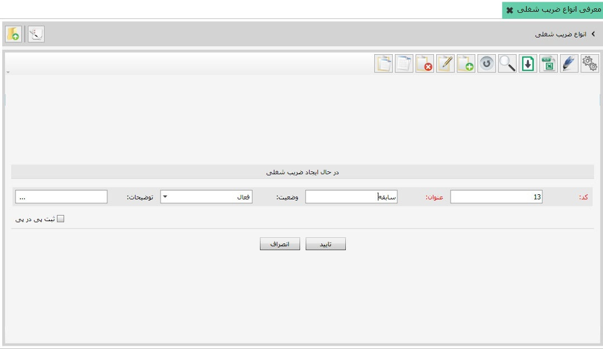
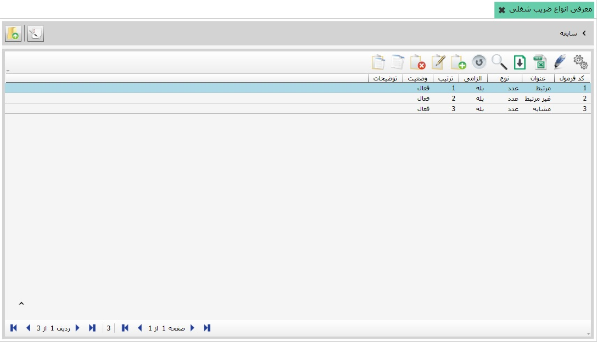

ضریب های شغلی عموما در سیستم حقوق و دستمزد سازمان ها و نهادهای دولتی مورد استفاده قرار می گیرند، از جمله ی این ضریب ها می توان به مواردی مانند تحصیلات و سابقه اشاره کرد، برای ایجاد ضریب شغلی بر روی کلید اضافه کلیک کنید و بعد از تکمیل فرم ایجاد و تایید، مطابق شکل زیر ضریب شغلی مورد نظر خود را تعریف کنید:
در تصویر بالا با کلیک کردن بر روی کلید تایید ضریب شغلی سابقه ایجاد می شود، حالا اگر بر روی سابقه دو بار کلیک کنید می توانید برای آن پارامترهایی تعریف نمایید، در تصویر زیر سه پارامتر برای سابقه تعریف شده است:
